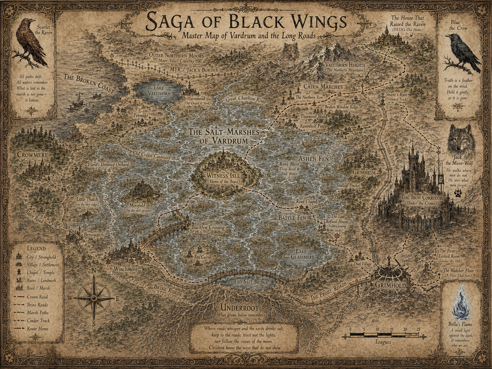
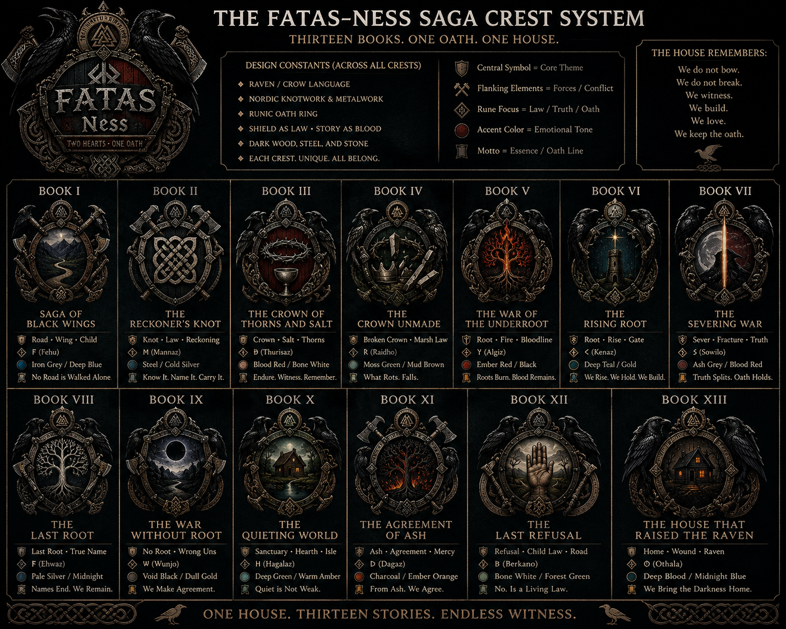
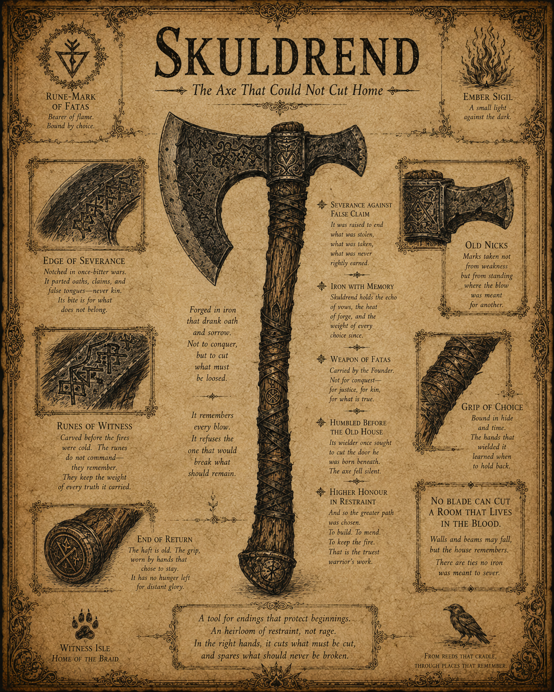
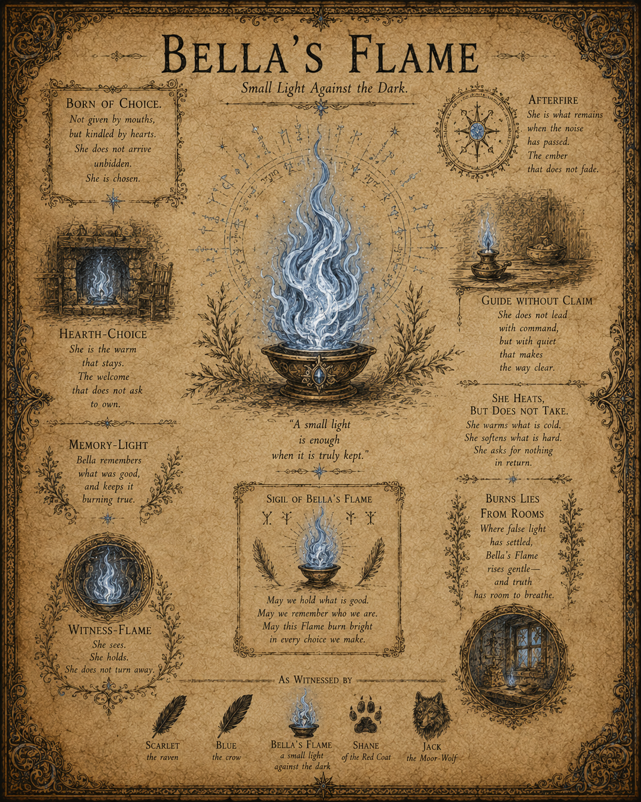
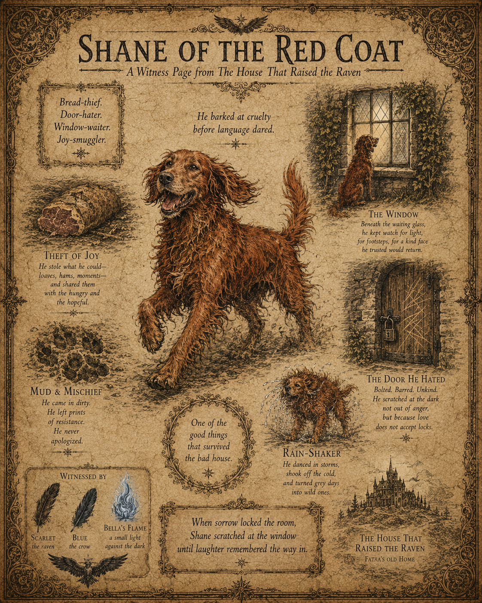
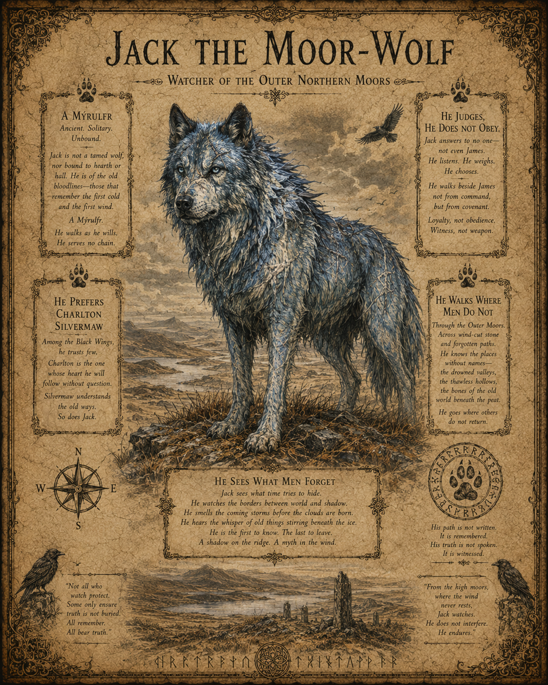
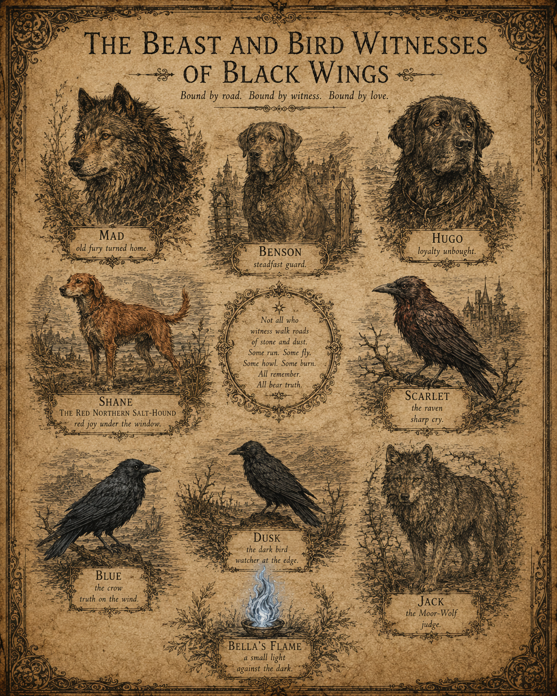

The Long Road of Black Wings
Saga road-map, Books I to XIII.
A great road-scroll of the saga’s first thirteen books: marsh, root, ash, house, Witness Isle, the old road home and the stones of the long refusal.
The Visual Treasury
Maps, shields, crests, saga plates, beast-witnesses, flame-marks, road-scrolls and the illustrated memory of Black Wings.
This archive gathers the visual world of the Saga of Black Wings: the long roads, house-maps, shields, beasts, flame, oath-marks, weapons and witness plates.
These images are part of the saga’s memory. Some are maps. Some are laws. Some are warnings. Some are simply the world looking back.
“What is drawn is not always decoration. Sometimes it is witness.”
Saga road-map, Books I to XIII.
A great road-scroll of the saga’s first thirteen books: marsh, root, ash, house, Witness Isle, the old road home and the stones of the long refusal.

The road from refuge toward the House That Raised the Raven.
A route-map of return: Witness Isle, the salt-marshes, remembered places, danger roads and the path toward the old house.

Salt-marsh, Iron Corridor, Underroot and long-road geography.
A wider map of Vardrum, showing the Salt-Marshes, Witness Isle, the Iron Corridor, the Underroot and the roads that keep remembering who crossed them.

Two hearts, one oath.
The central shield of FATAS and Ness: ravens, axes, oath-ring, red and black, love as witness and war-held devotion.

Thirteen books, one oath, one house.
The crest-system of the first thirteen books, setting out symbols, colours, runes, mottos and the visual grammar of the saga.

The axe that could not cut home.
FATAS’s axe rendered as saga plate: restraint, severance, memory, old nicks and the law that no blade can cut a room still alive in the blood.

Small light against the dark.
The blue-white flame of guide, memory and afterfire. Not command, not ownership, but a light that remains.

Joy-smuggler, window-waiter, bread-thief.
A witness plate for Shane, the red-coated dog whose loyalty, waiting and joy carry the house-thread with warmth.

Watcher of the Outer Northern Moors.
Jack stands as judgement, not obedience. He chooses, watches, walks beside James and remembers what men forget.

Mad, Benson, Hugo, Shane, Scarlet, Blue, Dusk and Jack.
A gathered plate of the saga’s animal witnesses: road-bound, love-bound, truth-bearing and never merely decoration.